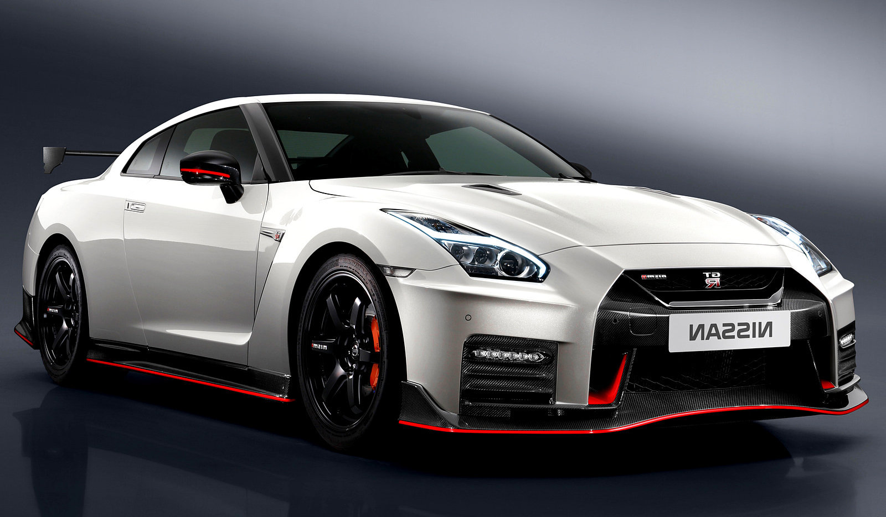

Nissan GT-R — спорткар, выпускаемый компанией Nissan Motor. Представлен в качестве серийной модели на Токийском автосалоне 24 октября 2007 года, продажи начались в 2008 году в Японии, затем в США и Европе. В отличие от предшественников, выпускавшихся только для JDM и ограниченным тиражом поставлявшихся в Англию, имеется вариант с левым рулём.
Двигатель: VR38DETT 6-цилиндровый V-образный, объемом 3,8 л, с двумя турбокомпрессорами IHI, расположен впереди. Мощность: 353 кВт (от 485 до 600 л.с. в зависимости от года выпуска и модификации) при 6400 об/мин. Каждый двигатель собирается вручную. Трансмиссия: полноприводная ATTESA E-TS с механически блокируемым дифференциалом. Трансмиссия включает два приводных вала, один передает мощность от двигателя к коробке передач, расположенной в задней части автомобиля, для привода задних колес, второй - от коробки к передним колесам. Коробка передач: 6-ступенчатая роботизированная BorgWarner с двойным сцеплением. Время переключения менее 0,15 с. Находится в задней части автомобиля. Кованые колесные диски из сверхлегкого алюминиевого сплава Тормозная система: дисковые 15" тормоза Brembo с 6-поршневыми суппортами спереди и 4-поршневыми сзади Независимая подвеска: Bilstein DampTronic.
В конце 2013 года была представлена версия от Nismo. Такой GT-R стал доступен в Японии в конце февраля 2014 года. - Под капотом 3,8-литровый V6 двигатель VR38DETT. Мощность двигателя - 600 л.с. и 652 Н•м крутящего момента. Масса 1720 кг. Максимальная скорость 320 км/ч. - Эксклюзивные Nismo шины, разработанные Dunlop, демонстрируют выдающиеся сцепление и хорошую управляемость. - Передняя колея расширена на 10 мм. - Новые 20-и дюймовые кованые колесные диски RAYS, окрашенные в черный цвет. - Алюминиевый багажник был заменен на карбоновый аналог. - Был добавлен новый аэродинамический обвес. - Было добавлено большое антикрыло. - Сиденья и оплетка руля сделаны из замши и окрашены в черный и красный цвет. - Новая светодиодная передняя оптика, её световой пучок может поворачиваться вслед за рулём. - По словам японских инженеров кузов и подвеска нового GT-R стали жестче, улучшилась шумоизоляция салона, вес автомобиля уменьшился на 17 кг. Автомобиль проехал круг по Nurburgring Nordshleife за 7:08,679. Стоимость около 150 000$.
 Вернуться назад